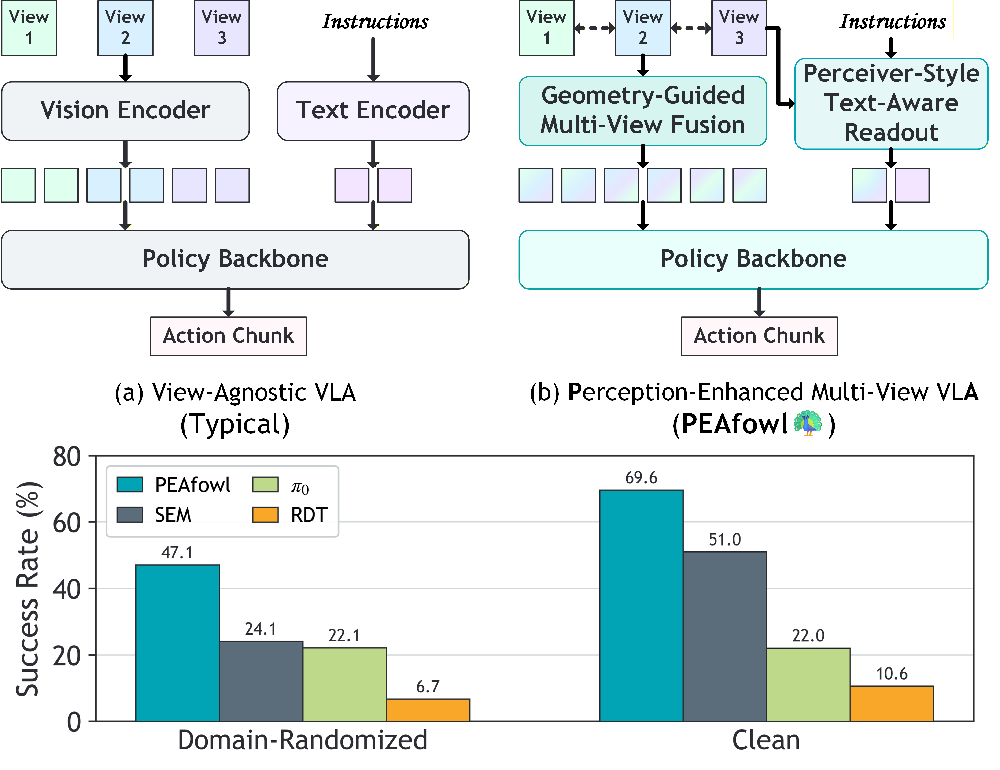
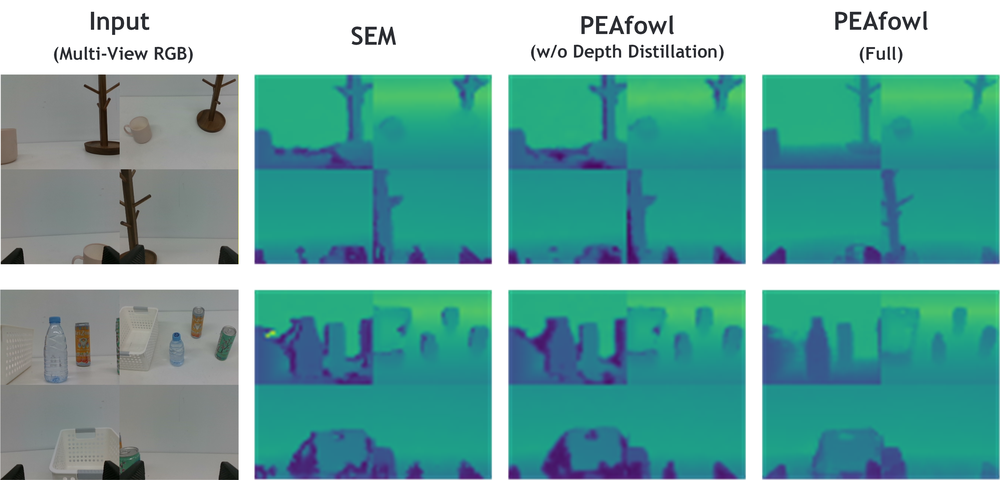

Architecture

Geometry-guided multi-view fusion, language-guided perception, and diffusion action prediction.
Perception-Enhanced Multi-View Vision-Language-Action for Bimanual Manipulation
🏆 Award: Grand Prize (3rd Place), AI+ Special Competition (Challenge Track), the 19th "Challenge Cup" (China Mobile), based on an industry problem proposed by Horizon Robotics.

Motivation and overview of PEAfowl.
PEAfowl is a perception-enhanced multi-view vision-language-action policy for bimanual manipulation. It predicts per-token depth distributions, performs differentiable 3D lifting, and aggregates local cross-view neighbors to form geometrically grounded representations. A Perceiver-style text-aware readout over frozen CLIP visual features replaces global language conditioning with instruction-relevant evidence retrieval. During training only, a pretrained depth teacher provides supervision for the depth-distribution head; raw depth remains the policy input at training and inference, so there is no test-time teacher overhead.
On RoboTwin 2.0, PEAfowl improves the strongest baseline by 23.0 percentage points in the domain-randomized setting. Physical experiments further show improved performance on the evaluated real-robot tasks.
Geometry-guided multi-view fusion, language-guided perception, and diffusion action prediction.
RoboTwin 2.0, 9 tasks, 50 demonstrations per task, and 100 rollouts per task and setting.
Dual-arm AgileX Piper with four Intel RealSense D435 RGB-D cameras; 6 evaluated tasks and 10 trials per task.

Simulation and real-world experimental setups.
Compared with SEM and pre-aggregation features, PEAfowl after cross-view aggregation produces more coherent representations for corresponding regions across cameras.

The depth-distribution head yields sharper and more complete geometric cues under noisy and incomplete commodity depth, with distillation used only during training.

Please cite the IEEE RA-L paper using its DOI.
@article{fan2026peafowl,
title = {PEAfowl: Perception-Enhanced Multi-View Vision-Language-Action for Bimanual Manipulation},
author = {Fan, Qingyu and Li, Zhaoxiang and Hu, Jinrui and Lu, Yi and Chen, Wang and Shen, Qiu and Long, Xiao-xiao and Cai, Yinghao and Lu, Tao and Wang, Shuo and Cao, Xun},
journal = {IEEE Robotics and Automation Letters},
year = {2026},
doi = {10.1109/LRA.2026.3726379}
}